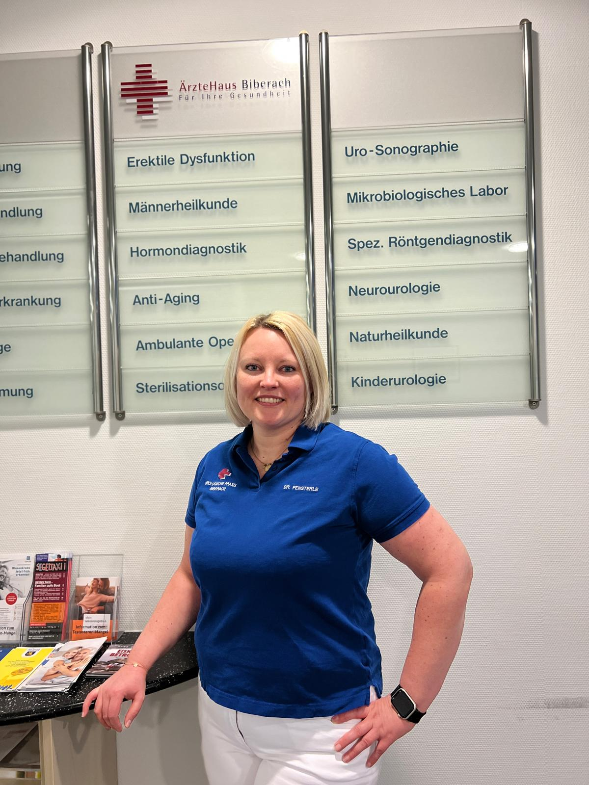

Moderne Urologie für Biberach, Laupheim und Riedlingen
Herzlich willkommen in der Urologischen Praxis Biberach. Wir behandeln Erkrankungen der harnableitenden Organe von Mann und Frau sowie Erkrankungen der männlichen Geschlechtsorgane und verbinden Diagnostik, konservative Therapie und ambulante Operationen unter einem Dach.
Breites urologisches Spektrum mit Schwerpunkten in Onkologie, Männergesundheit und Kinderurologie.
Der Fachbereich Urologie umfasst das Gebiet der harnableitenden Organe des Mannes und der Frau, also Niere, Harnblase, Harnleiter und Harnröhre. Ein zweites wichtiges Teilgebiet umfasst die Geschlechtsorgane des Mannes, also Hoden, Nebenhoden, Samenleiter, Penis sowie die Prostata.
Nahezu alle Erkrankungen in diesen Bereichen können in unserer Praxis untersucht und behandelt werden. Dies beinhaltet selbstverständlich auch ambulante Operationen. Einen besonderen Schwerpunkt legen wir auf die Behandlung von Harninkontinenz und Prostataerkrankungen.
Behandlungsspektrum
Prostataerkrankungen
Diagnostik und Behandlung von Prostataerkrankungen.
Harntrakt
Diagnostik und Behandlung von Erkrankungen des Harntrakts.
Uroonkologie
Urologische Krebsbehandlung und onkologische Basisversorgung.
Harninkontinenz
Abklärung und Behandlung von Harninkontinenz.
Potenz- und Hormonstörungen
Diagnostik und Therapie von Potenz- und Hormonstörungen.
Kinderurologie
Urologische Betreuung für Kinder und Jugendliche.
Andrologie
Männerheilkunde inklusive Fertilität, Sexualmedizin und Beratung.
Ausgewählte Verfahren und Schwerpunkte
ESWT bei erektiler Potenzstörung
Angeboten wird ein ultraschallbasiertes Verfahren zur nachhaltigen Verbesserung der Schwellkörperdurchblutung. Ziel ist eine langfristige Verbesserung der Erektion ohne Medikamentengabe, besonders bei Patienten, die gut auf Viagra und vergleichbare Präparate ansprechen.
Die Kosten betragen aktuell 80 Euro pro Sitzung. Zur Prüfung des Erfolgs sind etwa 6 bis 8 Sitzungen notwendig. Weitere Informationen: ed-therapie.info (öffnet in neuem Tab).
Bei Interesse an einer Behandlung genügt eine E-Mail an info@urologie-biberach.de mit dem Betreff „ESWT“.
Ambulante Operationen
Eingriffe im Genitalbereich sowie Sterilisationsoperationen bei abgeschlossener Familienplanung.
Bildgebung & Diagnostik
Sonographie, Dopplersonographie, Endoskopie und Labordiagnostik.
Urodynamik
Funktionelle Diagnostik bei Blasenentleerungsstörungen und Inkontinenz.
Vasektomie
Ausführliche Informationen zur Sterilisation des Mannes
Die Vasektomie ist laut Praxis ein sicheres, risikoarmes und kostengünstiges Verfahren zur Empfängnisverhütung. In Biberach werden pro Jahr etwa 300 Sterilisationsoperationen durchgeführt.
Der Eingriff führt zu einer endgültigen Unfruchtbarkeit und sollte erst bei abgeschlossener Familienplanung oder anderen gut abgewogenen Gründen erfolgen. Vor dem Eingriff findet immer ein persönliches Aufklärungsgespräch statt.
Vor dem Eingriff sollte die Schambehaarung am Vorabend entfernt werden. Bei örtlicher Betäubung muss man nicht nüchtern erscheinen; bei Vollnarkose darf 8 bis 12 Stunden vorher nicht gegessen, getrunken oder geraucht werden.
Betäubung
Die Vasektomie kann in örtlicher Betäubung oder Vollnarkose durchgeführt werden. Die Entscheidung liegt in der Regel beim Patienten und hat laut Praxis keinen Einfluss auf das Operationsergebnis.
Durchführung
Nach Desinfektion und steriler Abdeckung wird die Haut am Hodensack seitlich eröffnet. Aus beiden Samenleitern werden jeweils 2 bis 3 cm lange Teilstücke entfernt, pathologisch untersucht und die Stümpfe anschließend verschlossen und verschorft.
Nach dem Eingriff
Nach der Operation sollten Patienten ein bis zwei Stunden ruhen und abgeholt werden. Für zwei bis drei Tage wird Schonung empfohlen; die Fäden werden nach etwa einer Woche entfernt. Da der Eingriff medizinisch nicht notwendig ist, erfolgt laut Praxishinweis keine Krankmeldung für den OP-Tag oder die Zeit danach.
Häufige Fragen
Unfruchtbarkeit besteht erst nach wiederholt unauffälligen Kontrolluntersuchungen der Samenflüssigkeit.
Der Samenerguss bleibt erhalten, weil Samenzellen nur etwa 5 Prozent der Samenflüssigkeit ausmachen.
Potenz, Libido, Leistungsfähigkeit, Bartwuchs und Stimmlage werden laut Praxis nicht beeinträchtigt.
Eine operative Rückgängigmachung ist theoretisch möglich, führt aber nicht immer zu uneingeschränkter Zeugungsfähigkeit.
Die Kosten werden seit der Gesundheitsreform 2004 nicht von den gesetzlichen Krankenkassen übernommen.
Ärzteteam
Sechs Urologinnen und Urologen mit unterschiedlichen Schwerpunkten
Mitglied der Deutschen Gesellschaft für Urologie e.V. Seit 2013 niedergelassener Urologe in der überörtlichen Gemeinschaftspraxis Biberach/Laupheim.
Studium in Heidelberg, Praktika in Würzburg, Hamburg, Berlin und New York; Facharztanerkennung 2007.
Dr. Christian Fischer
Facharzt für Urologie
Schwerpunkte: Steintherapie, Vorsorge, ambulante und endoskopische Operationen.
Profil öffnen
Zulassungen u. a. für Sonographie inklusive Dopplersonographie, spezielle Röntgendiagnostik des Harntrakts, ambulante Operationen und onkologische Basisversorgung.
Seit Juli 2019 niedergelassener Urologe in Biberach; zusätzlich endoskopische Operationen an Blase und Prostata am Sana Klinikum Biberach.

Dr. Isabel Fensterle
Fachärztin für Urologie, Zusatzbezeichnung Andrologie
Mitglied der Deutschen Gesellschaft für Urologie e.V. und der German Society of Residents in Urology.
Seit Januar 2024 niedergelassene Urologin in Biberach; endoskopische Operationen an Blase und Prostata am Sana Klinikum Biberach.
Dr. Hans-Joachim Compter
(angestellter Arzt)
Facharzt für Urologie, Andrologie und medikamentöse Tumortherapie
Schwerpunkte: Andrologie, Tumortherapie, Männergesundheit und operative Verfahren.
Profil öffnen
Mitglied der Deutschen Gesellschaft für Urologie und der Südwestdeutschen Gesellschaft für Urologie. Weiterbildungsermächtigung der Ärztekammer Baden-Württemberg für Andrologie.
Seit Oktober 1993 in der Urologischen Praxis Biberach, stationäre Laseroperationen seit 2015 am Sana Klinikum Biberach.
Akutsprechstunde
Für akute Fälle wird täglich von 8:00 bis 9:00 Uhr eine offene Sprechstunde angeboten. Je nach Auslastung kann es zu Wartezeiten kommen; in diesem Rahmen ist nur eine dringliche, eingeschränkte Diagnostik möglich.